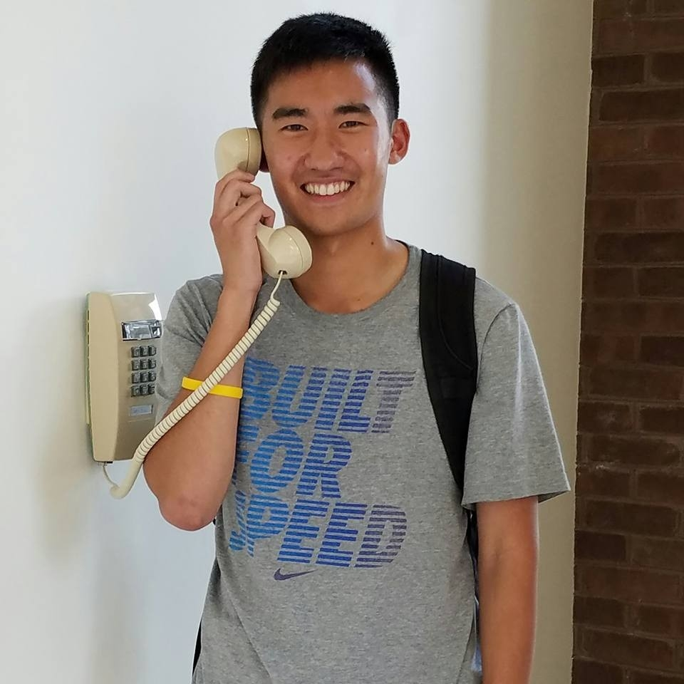

Hello! I am currently a rising fourth-year studying Computer Science at the University of Virginia's School of Engineering and Applied Science. I plan on graduating a semester early in December 2017. I have strong, splendid experience with web and mobile application development. I will be an Associate Software Engineer at Capital One for the summer of 2017, and I am also the lead Android developer for the non-profit organization Miracle Messages.
I was formerly a Software Engineer Intern at Leidos during the summer of 2016 and a Robotics and Game Design Instructor at Fairfax Collegiate during the summer of 2015.
I am currently a teaching assistant for CS 2110: Software Development Methods, taught by the wonderful Professor Nada Basit and Professor David Edwards. This course introduces students to Java and object-oriented programming, as well as unit testing, data structures and basic algorithms, and best code practices. Additionally, I will also be an undergraduate teaching assistant for CS 4970/4971: Service Learning Practicum during the upcoming Fall semester, taught by the fantastic Professor Aaron Bloomfield.
In my free time, I love working on random coding projects, going on runs (3.23 miles every day!), playing video games, browsing memes, participating in hackathons (goodbye sleep), watching movies, playing with my cat Mochi, and spending time with family and friends. Thanks for reading! :-)
Site last updated: June 3, 2017